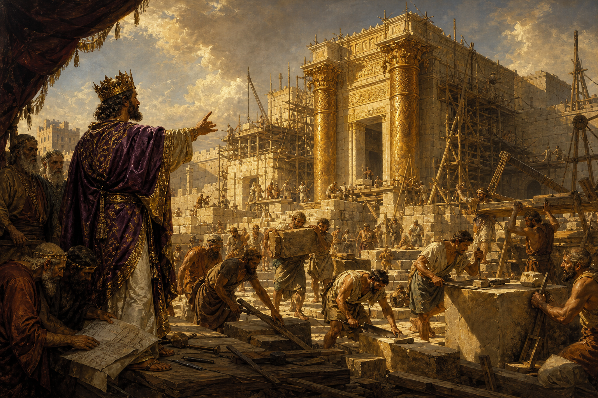

Old Testament · Book 11 of 39
1 Kings
Solomon asks for wisdom instead of wealth, builds a temple for the God of his father, and then slowly loses his way.
1 Kings opens on Solomon at his best and closes with a kingdom fractured by rulers who forgot the God who made them great.
Give therefore thy servant an understanding heart to judge thy people, that I may discern between good and bad.
What happens in 1 Kings
As David's reign ends, his son Solomon takes the throne, and in a dream at Gibeon, God invites him to ask for whatever he wants. Rather than requesting long life, riches, or victory over his enemies, Solomon asks for an understanding heart to govern God's people well — a request that pleases God so much that he is given wisdom beyond any king before or after him, along with the wealth and honour he did not ask for. Solomon uses this season to build the temple in Jerusalem, fulfilling the promise made to his father David, and his wisdom and splendor become famous across the ancient world, drawing visitors like the Queen of Sheba. Yet the book does not hide Solomon's slow decline: his many foreign wives turn his heart toward their gods in his old age, and after his death the kingdom splits in two, the northern kingdom of Israel and the southern kingdom of Judah, with a parade of kings afterward measured against a single question — did they walk in the ways of the Lord, or did they not. The book closes in the days of the prophet Elijah, confronting the idolatry of King Ahab and the prophets of Baal.
Why it matters
1 Kings shows both the height of what wisdom rightly used can build, and how quickly even the wisest heart can drift when loyalty is divided. It is a sober warning that blessing is not the same as guaranteed faithfulness, and it sets the stage for the prophets who will spend the rest of the Old Testament calling God's people back to single-hearted devotion.
Jump to a chapter
1 Kings has 22 chapters — select one to begin reading there.